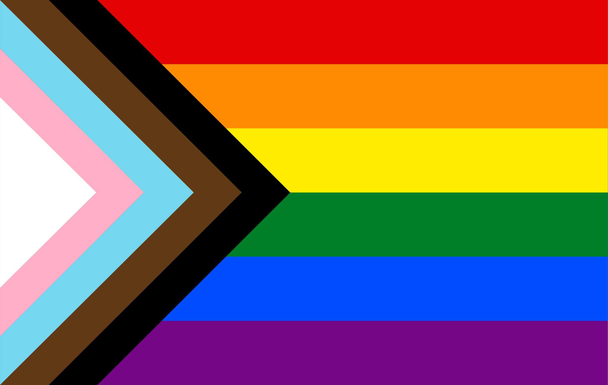

Exklave Wedding ist ein Teil von dem Wedding, der sich zwar geographisch in Pankow befindet, aber emotionell, kulturell und politisch zu dem Wedding gehört.
Westerlandstraße 2
2 OG rechts
13189 Berlin
Exklave Wedding ist ein interdisziplinäres Kunstprojekt. Es benutzt folgende Medien:
Exklave Wedding geht davon aus, dass alles miteinander verbunden ist. Das Projekt beschäftigt sich deswegen mit folgenden Themen:
Exklave Wedding ist ein Projekt von dem Künstlerkollektiv Exklave Wedding. Da das Kollektiv zurzeit aus einer Person besteht und alles zwischen den Mitgliedern geteilt wird, ist es auch 100% kommunistich.
Mitglieder:
Das Kollektiv trifft Entscheidungen 100% demokratisch und viele Faktoren kommen ins Spiel. Die wichtigste Frage bleibt aber immer "WITZIG oder NICHT WITZIG?"
Du kannst das Kollektiv gerne beitreten. Drucke dieses Formular aus, fülle es und schicke einfach und gemütlich per Post. Elektronische Übertragung ist leider nicht mit der deutschen Leitkultur vereinbar.
Exklave Wedding ist ein Kunstprojekt. Das ist alles von der Kunstfreiheit gedeckt. Bei Verlust oder Diebstahl übernehmen wir keine Haftung.
Die Fahne von der Exklave Wedding ist "Progress Pride flag" by Daniel Quasar.
